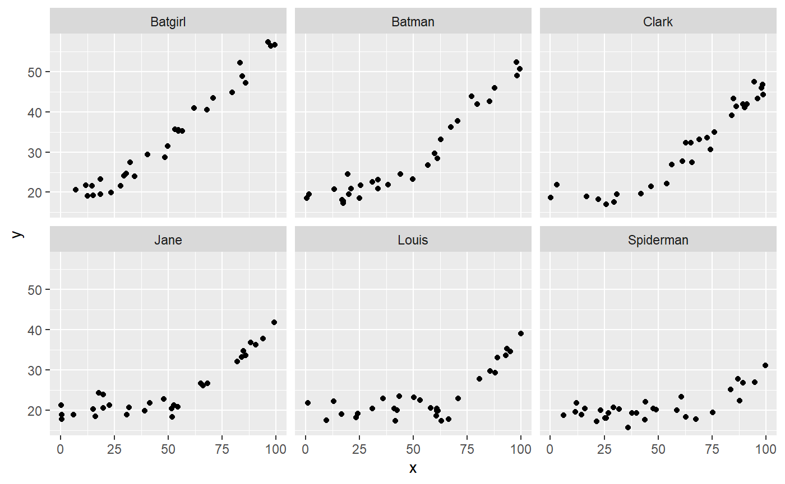
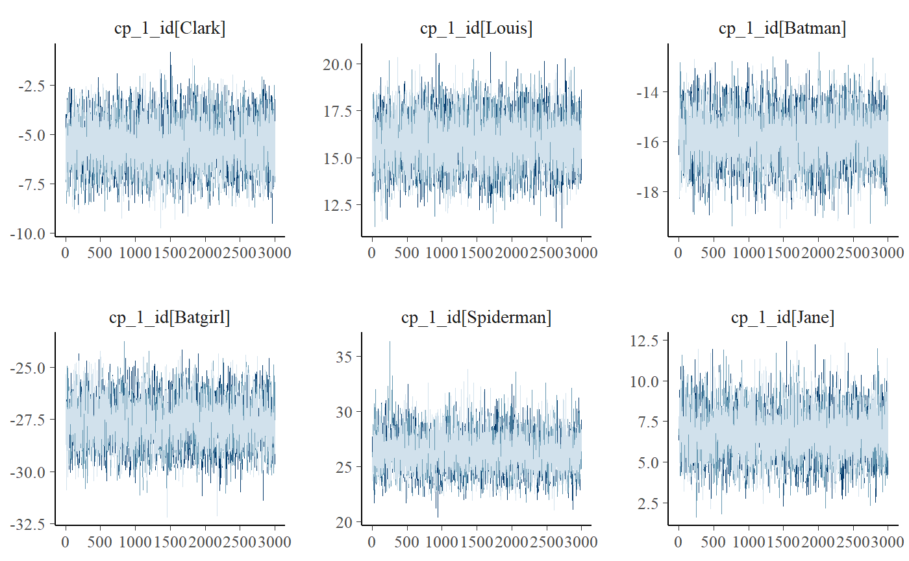

Varying change points with mcp
Jonas Kristoffer Lindeløv
2019-11-05
varying.RmdA unique feature of mcp is modeling change points as varying effects (sometimes called “random effects”). This has the advantage that you can let the change point vary by a factor while keeping other parameters common across varying factor levels.
This article in brief:
- How to simulate varying change points
- Get posteriors using
ranef(fit) - Plot using
plot(fit, facet_by="my_group")andplot(fit, "dens_overlay", pars = "varying", ncol = 3). - The default priors restrict varying change points to lie between the two adjecent change points.
Specifying varying change points
You specify varying effects using the classical lmer syntax (1|group). Currently (v. 0.1) mcp only support varying intercepts. For example, here we model a varying change point between a plateau and a joined slope:
You can have multiple varying change points with multiple groupings:
segments = list(
y ~ 1, # int_1
1 + (1|id) ~ 0 + x, # cp_1, cp_1_sd, cp_1_id[i]
1 + (1|species) ~ 0, # cp_2, cp_2_sd, cp_2_species[i]
(1|id) ~ 1 # cp_3 (implicit), cp_3_sd, cp_3_id[i]
)Here are some properties of the change point varying effects:
Zero centered: The varying effects are zero-centered around the associated group-level change point. In other words, the sum of all varying effects are exactly zero. This constraint is necessary for the parameters to be identifiable.
Hierarchical: Consider the first change point, cp_1, and it’s associated varying effects, cp_1_id. By default, it is modeled as sampled from (nested within) the group-level change point, cp_1, as well as a spread, cp_1_sd.
Constraints: The varying effects are constrained to lie (1) in the observed range of the x-axis, and/or (2) between the two adjecent change points. That is, all cp_1_id are between min(x) and cp_2. All cp_2_species are between cp_1 and cp_3 and all cp_3_id are between cp_2 and max(x). These constraints are enforced through truncation of the default prior (fit$prior) and you can override them by specifying a manual prior (see vignette(“priors”)).
Simulating varying effects
Let us do a worked example, simulating the varying change point between a plateau and a slope:
It is quite similar to simulating non-varying data, except that we need to simulate some varying offsets before passing all parameters to empty$func_y:
library(mcp)
empty = mcp(segments, sample = FALSE)
library(dplyr)
varying = c("Clark", "Louis", "Batman", "Batgirl", "Spiderman", "Jane")
data = tibble(
x = runif(length(varying) * 30, 0, 100), # 30 data points for each
id = rep(varying, each = 30), # the group names
id_numeric = as.numeric(as.factor(id)), # to positive integers
y = empty$func_y(x,
# Population-level:
int_1 = 20, x_2 = 0.5, cp_1 = 50, sigma = 2,
# Varying: zero-centered and 10 between each level
cp_1_id = 10 * (id_numeric - mean(id_numeric))
)
)
data## # A tibble: 180 x 4
## x id id_numeric y
## <dbl> <chr> <dbl> <dbl>
## 1 6.97 Clark 3 20.0
## 2 23.4 Clark 3 22.6
## 3 96.7 Clark 3 49.0
## 4 39.5 Clark 3 18.6
## 5 21.1 Clark 3 21.0
## 6 84.0 Clark 3 39.4
## 7 15.5 Clark 3 20.7
## 8 2.34 Clark 3 18.8
## 9 66.2 Clark 3 32.9
## 10 20.2 Clark 3 19.8
## # ... with 170 more rowsHere, we “translated” the id to an offset on the x-axis by multiplying with 10. We subtracted the mean to make the varying effects zero-centered around cp_1. The result:

Summarise and plot varying effects.
Fitting the model is simple:
If we just use plot(fit), we would see all points in one plot. We want to facet by id, so:

It seems that mcp did a good job of recovering the change points. There is a lot of information in this data, since the intercept and the slope on each side of the (varying) change point is shared between participants here.
If you use summary(fit) (or fixef(fit)) you will get the posteriors for the population-level effects. To get the random effects, do:
## Warning in get_summary(object, width, varying = TRUE): rhat computation failed: Error in chol.default(W) :
## the leading minor of order 6 is not positive definite## name mean X2.5 X97.5 rhat eff ts_se
## 1 cp_1_id[Batgirl] -26.308167 -28.463652 -24.296068 NA 6356 1.449176
## 2 cp_1_id[Batman] -15.520126 -17.369522 -13.557199 NA 5070 3.281750
## 3 cp_1_id[Clark] -5.094319 -6.998496 -3.092620 NA 3986 2.068239
## 4 cp_1_id[Jane] 6.172545 4.023994 8.126911 NA 1640 6.233288
## 5 cp_1_id[Louis] 16.523141 13.837418 19.140166 NA 2204 7.484230
## 6 cp_1_id[Spiderman] 24.226926 21.635278 26.944278 NA 4926 1.950724Notice how well they are estimated to be 10 apart, indicating good recovery.
Good convergence is not always as obvious as in this example. While plot(fit, "combo") show population-level parameters only, you can do this to get varying effects only:

Notice the use of the ncol argument to set the number of columns. You will often have many levels on your varying effect, so this is useful to get a good view of all of them. Naturally, you can do this for almost all kinds of plots.
Using pars = "varying" will plot all varying effects. This may be too much if you have multiple varying effects. To select just one, use regular expression in regex_pars. Two very handy operators are “^” (begins with) and “$” (ends with). Just to show that this “faceting” works for almost all of the many plot types, we now do two columns of "dens_overlay: